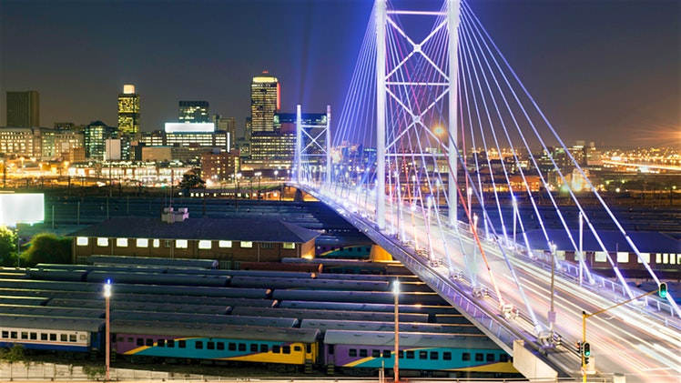
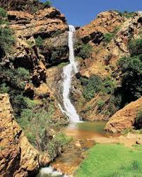

The main Witwatersrand gold reef was discovered in June 1884 on the farm Vogelstruisfontein by Jan Gerritse Bantjes that triggered the Witwatersrand Gold Rush and the founding of Johannesburg in 1886. The discovery of gold rapidly attracted people to the area, making necessary a name and governmental organisation for the area. Johann and Johannes were common male names among the Dutch of that time; two men involved in surveying the area for the best location of the city, Christian Johannes Joubert and Johann Rissik, are considered the source of the name by some
Johannesburg (/dʒoʊˈhænɪsbɜːrɡ/; Afrikaans: [jʊəˈɦanəsbœrχ]; also known as Jozi, Jo'burg, and eGoli)[1] is the largest city in South Africa and one of the 50 largest urban areas in the world. [9] It is the provincial capital and largest city of Gauteng, which is the wealthiest province in South Africa
The Witwatersrand (locally the Rand or, less commonly, the Reef) is a 56-kilometre-long (35 mi), north-facing scarp in South Africa. It consists of a hard, erosion-resistant quartzite metamorphic rock, over which several north-flowing rivers form waterfalls, which account for the name Witwatersrand, meaning "ridge of white waters" in Afrikaans.[1] This east-west-running scarp can be traced with only one short gap, from Bedfordview (about 10 km [6 mi] west of O.R. Tambo International Airport) in the east, through Johannesburg and Roodepoort, to Krugersdorp in the west (see the diagram at left below).[2]